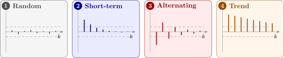

2.5 The sample autocorrelation function
Sample autocorrelation coefficients are an important guide to the properties of a time series. They measure the correlation between observations a given time apart.
Recall that for \(n\) pairs of observations \((x_i, y_i)\), the correlation coefficient is \[ r = \frac {\sum (x_i - \bar x)(y_i - \bar y)}{\sqrt {\sum (x_i - \bar x)^2\sum (y_i - \bar y)^2}} . \] Given \(n\) observations \(x_1, \dots , x_n\) of a time series, we can form the \(n - 1\) pairs \[ (x_1, x_2), \ (x_2, x_3), \ \dots , \ (x_{n-1}, x_n) , \] and treat the first member of each pair as one variable and the second as another. Their correlation is \[ r_1 = \frac {\sum _{t=1}^{n-1}(x_t - \bar x_{(1)})(x_{t+1} - \bar x_{(2)})}{\sqrt {\sum _{t=1}^{n-1}(x_t - \bar x_{(1)})^2\sum _{t=1}^{n-1}(x_{t+1} - \bar x_{(2)})^2}} , \] where \(\bar x_{(1)}\) is the mean of the first \(n - 1\) observations and \(\bar x_{(2)}\) the mean of the last \(n - 1\). For a long series both means are close to the overall mean \(\bar x\), and both sums of squares in the denominator are close to \(\sum _{t=1}^n(x_t - \bar x)^2\). This gives the simpler and standard form \[ r_1 = \frac {\sum _{t=1}^{n-1}(x_t - \bar x)(x_{t+1} - \bar x)}{\sum _{t=1}^{n}(x_t - \bar x)^2} , \] the autocorrelation coefficient at lag \(1\). Similarly, the correlation between observations a distance \(k\) apart is the autocorrelation coefficient at lag \(k\), \[ r_k = \frac {\sum _{t=1}^{n-k}(x_t - \bar x)(x_{t+k} - \bar x)}{\sum _{t=1}^{n}(x_t - \bar x)^2} . \] In practice the autocorrelations are calculated from the sample autocovariance at lag \(k\), \[ c_k = \frac 1n\sum _{t=1}^{n-k}(x_t - \bar x)(x_{t+k} - \bar x) , \] as \(r_k = c_k/c_0\), for \(k = 1, 2, \dots \), with \(k < n\). (The divisor \(n\) rather than \(n - k\) is deliberate: it keeps the sequence of \(c_k\) a valid autocovariance function, a property needed in Section 3.)
Proof. Write \(u_t = x_t - \bar x\). By the Cauchy–Schwarz inequality, \[ \Bigl |\sum _{t=1}^{n-k}u_tu_{t+k}\Bigr | \le \sqrt {\sum _{t=1}^{n-k}u_t^2}\sqrt {\sum _{t=1}^{n-k}u_{t+k}^2} \le \sqrt {\sum _{t=1}^nu_t^2}\sqrt {\sum _{t=1}^nu_t^2} = \sum _{t=1}^nu_t^2 , \] since each partial sum of squares is at most the full one. Dividing by \(\sum u_t^2\) gives \(|r_k| \le 1\). □
The correlogram
A plot of \(r_k\) against \(k\) is called a correlogram. It is one of the most useful descriptive tools, and its shape is a strong clue to the nature of the series (Figure 3):
- 1.
- Random series. If the observations are independent, \(r_k\) is approximately \(N(0, 1/n)\) for each \(k \ne 0\), so about \(95\%\) of the coefficients should lie within \(\pm 2/\sqrt n\). (This result is justified later, with the partial autocorrelation function.)
- 2.
- Short-term correlation. A fairly large \(r_1\), followed by a few smaller positive coefficients that die away towards zero, indicates that an observation above the mean tends to be followed by a few more.
- 3.
- Alternating series. If successive observations tend to lie on opposite sides of the mean, the correlogram alternates in sign, starting with a negative \(r_1\).
- 4.
- Non-stationary series. If the series has a trend, \(r_k\) comes down only slowly and stays positive for large lags: the trend dominates everything else. The correlogram is then of little use except to show that the trend must be removed first.
- 5.
- Seasonal series. If the series has a seasonal pattern, the correlogram oscillates with the same period: for monthly data, large positive values at lags \(12, 24, \dots \) and negative values around lags \(6, 18, \dots \).

Example 2.5.2. Compute \(r_1\), \(r_2\) and \(r_3\) for the series \(4, 6, 9, 7, 5, 3, 4, 6, 8, 8\).
Solution. Here \(n = 10\) and \(\bar x = 60/10 = 6\), so the deviations \(u_t = x_t - 6\) are \[ -2, \ 0, \ 3, \ 1, \ -1, \ -3, \ -2, \ 0, \ 2, \ 2 , \] with \(\sum u_t^2 = 4 + 0 + 9 + 1 + 1 + 9 + 4 + 0 + 4 + 4 = 36\). The lagged products are: \begin {align*} \text {lag } 1: \ & 0 + 0 + 3 - 1 + 3 + 6 + 0 + 0 + 4 = 15 , \\ \text {lag } 2: \ & -6 + 0 - 3 - 3 + 2 + 0 - 4 + 0 = -14 , \\ \text {lag } 3: \ & -2 + 0 - 9 - 2 + 0 - 6 - 4 = -23 . \end {align*}
So \[ r_1 = \frac {15}{36} = 0.417 , \qquad r_2 = \frac {-14}{36} = -0.389 , \qquad r_3 = \frac {-23}{36} = -0.639 . \] Equivalently, \(c_0 = 36/10 = 3.6\) and \(c_1 = 1.5\), giving \(r_1 = 1.5/3.6\). The positive \(r_1\) and the negative \(r_3\) reflect the slow up-and-down swing in the series, with a period of about six observations: values three apart tend to lie on opposite sides of the mean. With only \(10\) observations the band \(\pm 2/\sqrt {10} = \pm 0.63\) is wide, and only \(r_3\) reaches it.
Questions on this section
Stuck on something here? Ask below and it stays attached to this topic.